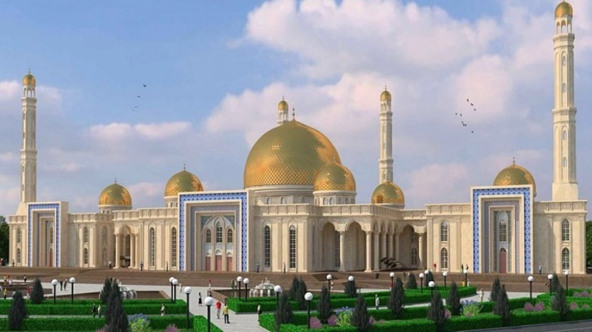

アルマトイ中央モスク
1999年に建てられた白い大理石のモスクで、金色のドームを持つ。収容人数は約7,000人。ドームは陶磁器タイルと金で装飾され、内部にはコーランの一節を描いたモザイクがある。
1999年に建てられた白い大理石のモスクで、金色のドームを持つ。収容人数は約7,000人。ドームは陶磁器タイルと金で装飾され、内部にはコーランの一節を描いたモザイクがある。
中央アジア最大級の博物館の一つ。1931年に設立され、現在の建物は1985年に建築された。展示は先史時代から現代までカザフスタンの歴史を網羅している。
アルマトイの象徴であり、共和国広場にある。高さ28メートルの柱の上に「黄金の人」の像が立ち、カザフスタンの独立と再生を象徴している。